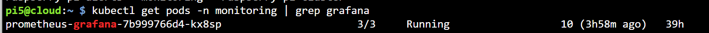
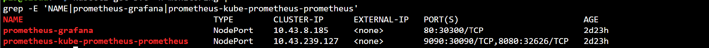
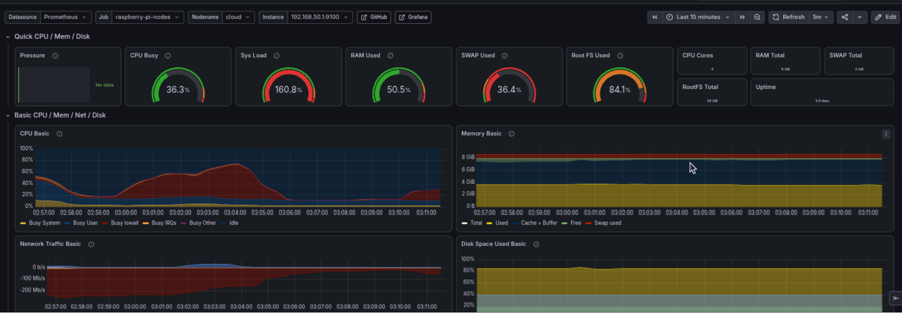

Grafana Dashboards
Grafana deployment and dashboard configuration for the Raspberry Pi edge-monitoring cluster.
Namespace: monitoring
Service: prometheus-grafana
Data source: Prometheus
Related documentation: Monitoring overview · Prometheus
Overview
Grafana provides real-time and historical visualization of the metrics collected by Prometheus from Pi5, Pi4, and the eight Pi3 workers. The dashboard helps the team observe cluster health while intrusion detection, image processing, storage, and inference workloads are running.
The dashboard displays:
- Node availability
- CPU utilization
- Memory utilization
- Disk utilization
- Network receive and transmit rates
- Raspberry Pi temperature
- System load and uptime
Grafana is also useful during performance experiments because it makes resource changes visible before, during, and after inference workloads. The final dashboard screenshot is included in the Dashboard Verification section to avoid displaying the same dashboard twice.
Grafana Deployment
Grafana is installed as part of kube-prometheus-stack. It is enabled in prometheus-k3s-values.yaml:
grafana:
enabled: true
replicas: 1
service:
type: NodePort
port: 80
targetPort: 3000
nodePort: 30300
Deploy the monitoring stack:
helm upgrade --install prometheus \
prometheus-community/kube-prometheus-stack \
--namespace monitoring \
--create-namespace \
-f prometheus-k3s-values.yaml \
--set nodeExporter.enabled=false \
--wait \
--timeout 30m
Check the Grafana pod and service:
The Grafana pod should show all containers ready:

The screenshot above is valid evidence: the Grafana pod reports 3/3 containers ready and Running.

The service output confirms that Grafana is exposed as a NodePort service on port 30300 and Prometheus on port 30090.
Accessing Grafana
Grafana is exposed by the configured NodePort and can be accessed directly at:
For this deployment, use:
If NodePort access is unavailable, use temporary port forwarding:
Then open:
Verify the Grafana HTTP service through the permanent NodePort:
Expected fields include:
Retrieve the administrator password:
kubectl get secret -n monitoring prometheus-grafana \
-o jsonpath='{.data.admin-password}' \
| base64 -d
echo
Use the following username:
Do not add the administrator password to Git, screenshots, or documentation. A login-page screenshot is not required because it does not prove that the data source or dashboards are working.
Prometheus Data Source Configuration
The Helm chart normally provisions Prometheus automatically as a Grafana data source. Verify the configuration inside Grafana:
- Open Connections.
- Select Data sources.
- Open Prometheus.
- Confirm the Prometheus service URL.
- Select Save & test.
- Confirm that the connection succeeds.
Use the regular Prometheus service created by the Helm release:
Kubernetes service DNS is used because Grafana and Prometheus run inside the same K3s cluster.

Dashboard Creation
The dashboard can be created manually or initialized using the Node Exporter Full community dashboard.
Import the base dashboard
- Open Dashboards.
- Select New and then Import.
- Enter dashboard ID
1860. - Select Load.
- Choose the Prometheus data source.
- Select Import.
The imported dashboard is named Node Exporter Full.
Configure dashboard variables
Use the following selections:
- Datasource: Prometheus
- Job:
raspberry-pi-nodes - Instance/Nodename: required Raspberry Pi
- Time range: Last 15 minutes
- Refresh interval: 10 seconds
If the imported dashboard does not list raspberry-pi-nodes, open Dashboard settings → Variables and verify the variable queries.
For the Job variable, use:
For the Instance or Node variable, use:
Set each variable to refresh On dashboard load. Return to the dashboard and select:

Create a custom panel
For each panel described below:
- Open the dashboard.
- Select Add and then Visualization.
- Choose the Prometheus data source.
- Paste the provided PromQL expression.
- Select the suggested visualization.
- Configure the title, unit, legend, and thresholds.
- Select Apply.
- Save the dashboard.
The panel editor does not require a separate screenshot when the query and settings are already documented below.
Node Availability Panel
This panel shows whether Prometheus can reach each Raspberry Pi Node Exporter.
Recommended settings:
| Setting | Value |
|---|---|
| Visualization | Stat or State timeline |
| Title | Node Availability |
| Unit | Short |
Value 1 |
Online / green |
Value 0 |
Offline / red |
| Legend | {{instance}} |
A stat panel is suitable for a compact cluster overview. A state timeline is useful when historical availability must be shown.
CPU Usage Panel
CPU utilization is calculated from the non-idle CPU time reported by Node Exporter.
100 - (
avg by(instance) (
rate(node_cpu_seconds_total{
job="raspberry-pi-nodes",
mode="idle"
}[2m])
) * 100
)
Recommended settings:
| Setting | Value |
|---|---|
| Visualization | Time series |
| Title | CPU Usage by Node |
| Unit | Percent (0–100) |
| Minimum | 0 |
| Maximum | 100 |
| Warning threshold | 80 |
| Critical threshold | 90 |
| Legend | {{instance}} |
Memory Usage Panel
Memory utilization is calculated using total memory and currently available memory.
100 * (
1 - (
node_memory_MemAvailable_bytes{job="raspberry-pi-nodes"}
/
node_memory_MemTotal_bytes{job="raspberry-pi-nodes"}
)
)
Recommended settings:
| Setting | Value |
|---|---|
| Visualization | Time series or Gauge |
| Title | Memory Usage by Node |
| Unit | Percent (0–100) |
| Minimum | 0 |
| Maximum | 100 |
| Warning threshold | 80 |
| Critical threshold | 90 |
| Legend | {{instance}} |
Disk Usage Panel
This query calculates root filesystem utilization while excluding temporary and container filesystems.
100 * (
1 - (
node_filesystem_avail_bytes{
job="raspberry-pi-nodes",
mountpoint="/",
fstype!~"tmpfs|overlay|squashfs"
}
/
node_filesystem_size_bytes{
job="raspberry-pi-nodes",
mountpoint="/",
fstype!~"tmpfs|overlay|squashfs"
}
)
)
Recommended settings:
| Setting | Value |
|---|---|
| Visualization | Bar gauge or Gauge |
| Title | Root Disk Usage |
| Unit | Percent (0–100) |
| Minimum | 0 |
| Maximum | 100 |
| Warning threshold | 80 |
| Critical threshold | 90 |
| Legend | {{instance}} |
Network Traffic Panel
Create two queries in the same time-series panel.
Query A — Receive rate
sum by(instance) (
rate(node_network_receive_bytes_total{
job="raspberry-pi-nodes",
device!~"lo|veth.*|docker.*|cni.*|flannel.*"
}[2m])
)
Query B — Transmit rate
sum by(instance) (
rate(node_network_transmit_bytes_total{
job="raspberry-pi-nodes",
device!~"lo|veth.*|docker.*|cni.*|flannel.*"
}[2m])
)
Recommended settings:
| Setting | Value |
|---|---|
| Visualization | Time series |
| Title | Network Traffic by Node |
| Unit | Bytes/second (Bps) |
| Query A legend | RX {{instance}} |
| Query B legend | TX {{instance}} |
Temperature Panel
Use the temperature metric exposed by the Raspberry Pi Node Exporter environment.
Primary query:
Alternative query:
Recommended settings:
| Setting | Value |
|---|---|
| Visualization | Time series or Gauge |
| Title | Raspberry Pi Temperature |
| Unit | Celsius (°C) |
| Warning threshold | 60 |
| Critical threshold | 70 |
| Legend | {{instance}} |
Use the query that returns temperature data in Prometheus. Some nodes may not expose the same temperature metric depending on hardware and operating-system support.
Dashboard Verification
Confirm that Grafana is receiving live Prometheus data:
- Select
raspberry-pi-nodesfrom the Job variable. - Select individual Pi5, Pi4, and Pi3 instances.
- Set the time range to Last 15 minutes.
- Set refresh to
10s. - Confirm that CPU, memory, disk, and network panels update.
- Confirm that
updisplays1for reachable nodes. - Confirm that the values correspond with the same PromQL queries in Prometheus.
The dashboard is successfully verified when live values are visible for the selected nodes and new samples appear after each refresh interval.
Some panels may show N/A when a metric is not supported by a particular Raspberry Pi, operating system, filesystem, or Node Exporter version. This does not invalidate the dashboard when the core availability, CPU, memory, disk, network, uptime, and load metrics are present.

Exporting the Dashboard
Export the completed dashboard so another team member can import the exact panels, variables, thresholds, and layout without recreating them manually.
- Open the completed dashboard.
- Select Dashboard settings.
- Select JSON model or Export, depending on the Grafana version.
- Enable the option to make the dashboard importable on another instance, if displayed.
- Save the file as:
To import the saved file later:
- Open Dashboards → New → Import.
- Upload
raspberry-pi-monitoring-dashboard.json. - Select the Prometheus data source.
- Select Import.